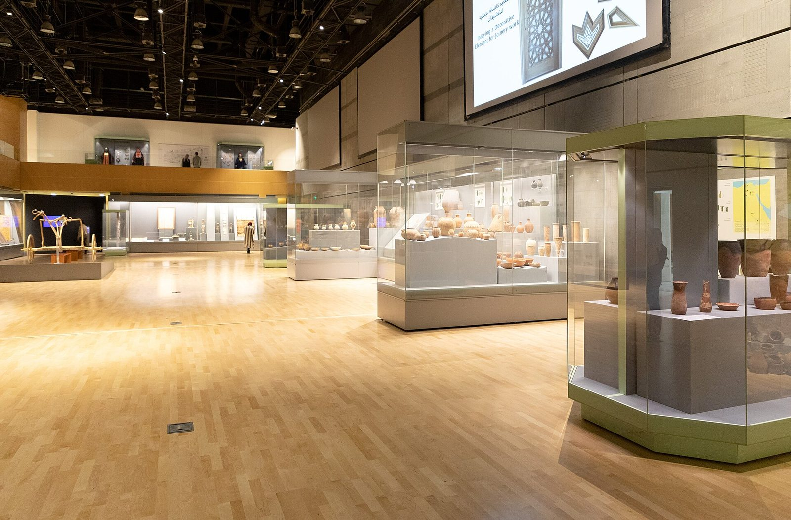
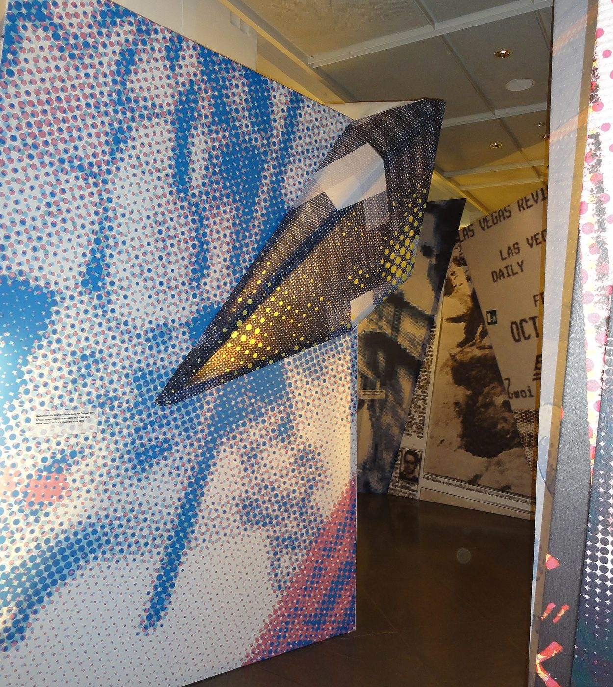
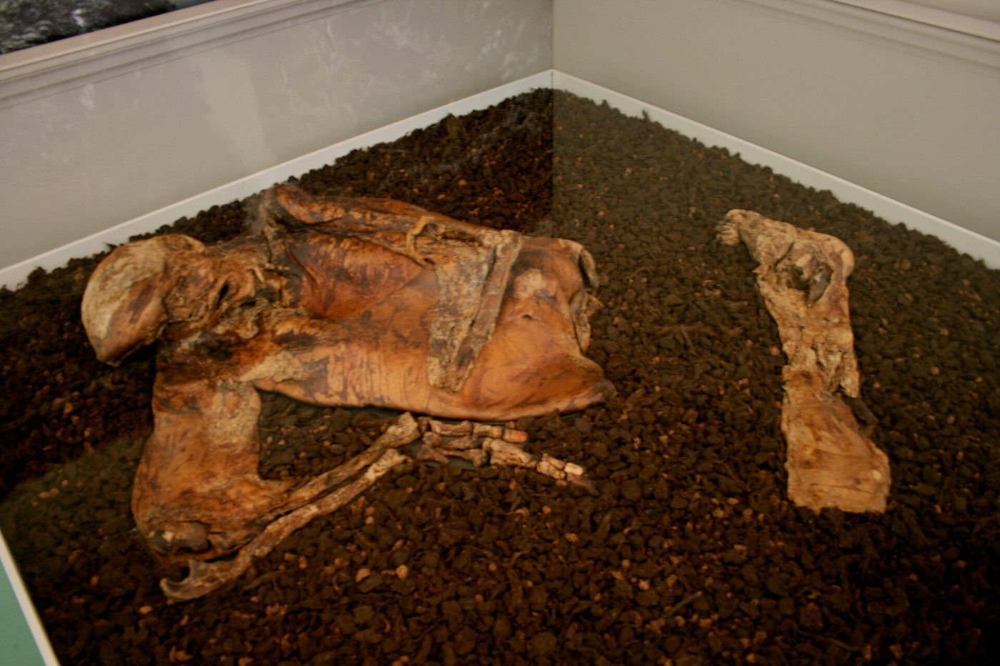
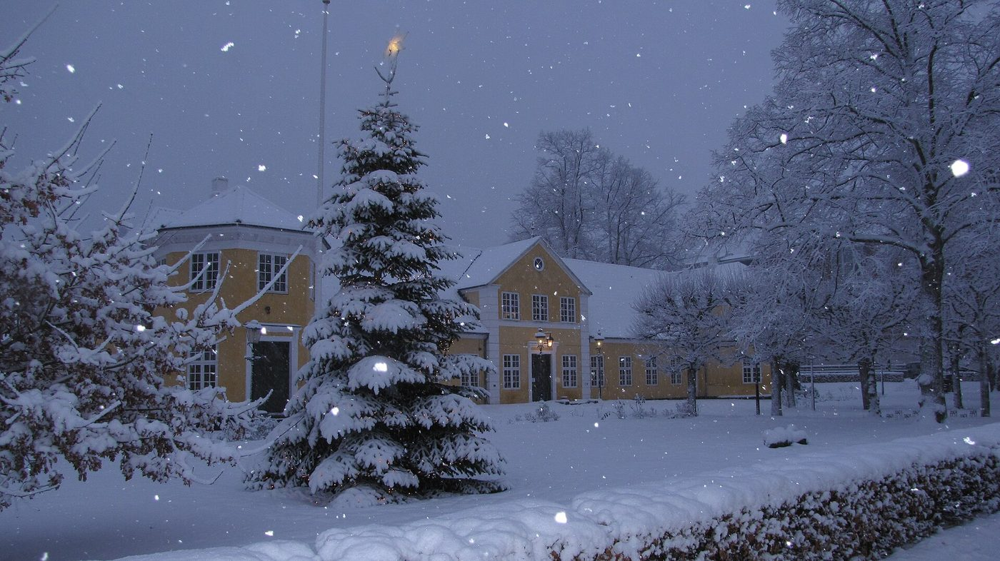
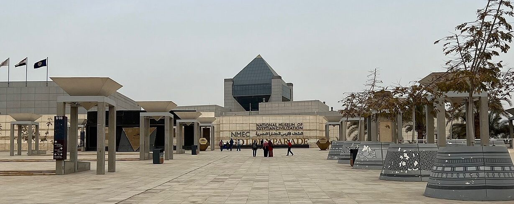

Unit 3 · Human remains · Lesson 4
Preserving and displaying the dead
A cold cell, a glass case, a parade through a city: what do museums’ choices say about the people they display?
Year 11 Ancient History · Present with → or space · Read on a phone with R

Connect · 3 minutes · everyone writes one line · press K for the timer
Name one scientific method and one thing it revealed about Ötzi.
“The method … revealed that …”
Be precise: name the method (X-ray, CT scan, ancient DNA, analysis of stomach contents), not just “science”.
An X-ray in 2001 revealed a flint arrowhead in his left shoulder: he had been shot.
DNA and other analysis of his stomach contents (a 2018 study) showed ibex and deer meat, einkorn wheat and a little bracken, and he seems to have eaten a lot of fat.
His genome (a 2023 study) revealed mostly early-farmer ancestry, and that he probably had darker skin than present-day Europeans.

Learning intentions and success criteria · 2 minutes
Today’s goals
- understand how museums preserve and display human remains
- analyse what display choices communicate
- describe how one body is preserved today
- explain what two display choices communicate
- write a respectful museum label and justify my choices
Syllabus outcomes: AH-11-05 analyses different types of sources for evidence to support a historical account or argument · AH-11-06 explains differing interpretations and representations of the past · AH-11-07 communicates historical understanding, applying historical knowledge, terms and concepts. Life Skills: AH-LS-09 identifies different interpretations of the past · AH-LS-10 compares representations of the past.
Note-making · the routine for the whole course
How to structure your notes
questions and key terms, written after
short phrases, arrows (→ leads to), abbreviations (c. = about; BM = British Museum)
- 1Rule up the page firstA cue column about a quarter of the page wide; title and date at the top; room for a summary at the bottom.
- 2Listen and look, then writeDon’t copy while a slide is being explained. Phrases, not sentences.
- 3Write your own notes at each ✎ checkpointThen compare with the model notes, one row at a time. Add what you missed in a second colour.
- 4Write the cue questions afterwardsUse exam verbs: explain, analyse, assess. To revise, cover your notes and answer the cues.
- 5Finish with a three-sentence summaryTwo checkpoints today: preserving the dead today · what display choices communicate.
Key vocabulary · add to the unit word wall
Words for preserving and displaying the dead
| Preserving the dead | Meaning |
|---|---|
| natural preservation | Preservation by the environment, such as ice, bogs or dry desert sand, without human intervention. |
| mummification | Preserving a body’s skin and soft tissue: done deliberately in ancient Egypt, and naturally by ice, bogs or desert. |
| conservation | Treating and storing remains or objects to stop them deteriorating. |
| freeze-drying | Freezing remains, then turning the ice in them straight into vapour, so that they dry with as little shrinkage as possible. |
| replica | A copy made to look like an original, sometimes displayed instead of it. |
| Displaying the dead | Meaning |
|---|---|
| human remains | The bodies, or parts of the bodies, of people who have died — including bones, preserved tissue and ashes. |
| mummified person | A person whose body has been preserved, naturally or deliberately; some museums (e.g. National Museums Scotland) now prefer this to ‘mummy’. |
| consent | Permission given freely; the ancient dead cannot give it, which raises ethical questions. |
| representation | A later picture, text or object that portrays the past in a particular way, such as a film, a plaque or a museum label. |
| museum label | An informative text for a public audience, placed beside a display. |
1 · Preserving the dead today · I do — every choice does three things
Six display choices: each one protects, shows and implies
Protects the remains?Shows visitors what?Implies what about the person?
Which choices mainly protect the remains, and which mainly send a message?
Lighting mainly protects; labels, covers, replicas and warnings mainly send a message. Most choices do both: a viewing window helps keep a cold cell sealed and makes looking a deliberate choice; low light protects skin and can hide.
1 · Preserving the dead today · I do — think aloud · Ötzi, South Tyrol Museum of Archaeology, Bolzano
Ötzi: a cold cell and a small window
… It lies on precision scales at -6°C and 99% humidity and is visible to the public through a small window. The mummy is regularly sprayed with sterile water to prevent loss of its natural moisture.
South Tyrol Museum of Archaeology, “The body”, iceman.it (checked 25 November 2026)
What does the cell protect?
His body. Ötzi is “a wet mummy that was mummified naturally in the glacier ice”, so since 1998 his cell has copied glacier conditions, and sterile water stops him drying out.
What do visitors see?
The real man, but only through a small window, in a separate area. Three floors tell his story: the discovery, his clothing and equipment, the research and a life-like reconstruction.
What message does it send?
He is a person, not a photo opportunity: “You are very welcome to take a selfie with Ötzi’s reconstruction on the 2nd floor. However, it is not allowed with the mummy on the 1st floor.” Looking through the window is a deliberate choice.
1 · Preserving the dead today · I do — think aloud · Lindow Man, British Museum, London
Lindow Man: a low case, low light

- Found: August 1984, by peat cutters at Lindow Moss, Cheshire, England
- Died: between about 2 BCE and 119 CE (British Museum)
- Conserved: soaked in polyethylene glycol, then freeze-dried, so he kept his shape
- On display: at the British Museum since 1986; light 30–50 lux in 1997–2004 (the latest published figure), after his skin had lightened
- Where: a corner of the Iron Age gallery (Room 50), set back from the main walkway and screened on two sides (the museum’s curators, 2019)
What does the display protect?
His body: freeze-drying stopped decay with very little shrinkage, and dim light slows the change in his skin colour.
What do visitors see?
The real remains, close up, in a low case that visitors look down into. There is no window or cover, but the case sits in a corner of the Iron Age gallery, set back from the main walkway and screened on two sides.
What message does it send?
He is evidence for understanding Britain about 2,000 years ago. The dark bed may suggest the bog he lay in. Visitors look down on him, so the label must show that he was a person.
Notes checkpoint 1 of 2
Preserving the dead today
2 · What displays communicate · We do — Tollund Man, Museum Silkeborg, Denmark
Tollund Man: a real head on a replica body

- 1950–51: found in Bjældskovdal bog; only the head and a few small parts are conserved (the head is finished just before Christmas 1951)
- 1952: the head, with his cap, noose and belt, goes on show at Silkeborg
- 1980s: the museum traces his other remains; a replica body is made
- Today: the real head on the replica body, in a secure display case
Curator Therkel Mathiassen from The Danish National Museum declined. He thought that it would be too macabre to display a partly dissolved human body like that, and apart from that, nobody really knew how to preserve the body.
Museum Silkeborg, “The latest news about Tollund Man”, museumsilkeborg.dk (checked 25 November 2026)
What were the curator’s two reasons in 1950? Why might the museum now show his real head on a replica body? What does that show, and what might it hide?
In 1950 the curator gave two reasons: respect (“too macabre”) and science (“nobody really knew how to preserve the body”). Today the replica shows him as a whole person, lying as he was found, rather than a head on its own. But most of what visitors see is a copy, so the label must say what is real.
2 · What displays communicate · We do — in pairs, then cold call a pair for each row
Compare the three displays against four criteria
Is the dead person treated as a person? (words used, photos, no jokes)
What do visitors learn? (who, when, how we know, what is uncertain)
Does it protect the remains? (cold, humidity, light, sealed case)
Can visitors choose whether to look? (window, separate area, warning)
| Criterion | Ötzi (Bolzano) | Lindow Man (London) | Tollund Man (Silkeborg) |
|---|---|---|---|
| Respect | No photos or selfies with Ötzi himself; a separate area | Shown with care among objects of his time; no cover, but set back in a screened corner | In 1950 a whole body seemed “too macabre”; today a replica body makes him whole |
| Information | Three floors: discovery, finds, research, a reconstruction | Evidence of Britain about 2,000 years ago, among objects of his time | An Iron Age exhibition built around him and Elling Woman |
| Preservation | Strong: −6 °C, 99% humidity, sterile water | Strong: freeze-dried; dim light (30–50 lux); temperature, humidity and light tightly controlled | The head was conserved; most of the body on show is a copy |
| Visitor choice | Strong: you choose to look through a small window | Partly: no window or cover, but a corner set back from the main walkway, screened on two sides | Not clear from the museum’s pages: a question to ask |
2 · What displays communicate · We do — the Pharaohs’ Golden Parade, Cairo, 3 April 2021
Moving the royal dead: the 2021 parade

- Who: 22 royal mummified people, 18 kings and 4 queens
- Route: Egyptian Museum, Tahrir Square → new museum, Fustat
- How: each in a nitrogen-filled capsule, on a vehicle with shock absorbers, decorated like an ancient funeral boat
- Now: the Royal Mummies Gallery shows 20 of them; it opened to visitors on 18 April 2021
Who made each source, and what does it want you to think about the parade?
The president: national pride (“With all pride”). The Egyptologist: care for “irreplaceable royal ancestors”, with a nod to “the spectacle”. The museum: the feeling of a royal burial place (“the Valley of The Kings”).
With all pride, I look forward to receiving the kings and queens of Egypt after their journey.
Abdel Fattah el-Sisi, 3 April 2021, in English as quoted by NPR (“Royal Mummies Paraded Through Downtown Cairo In Museum Move”, 3 April 2021)
… there was the spectacle but we also felt that everything was done safely; obviously these are irreplaceable royal ancestors, so every care had to be taken.
Salima Ikram, head of the Egyptology unit at the American University in Cairo, speaking to Al Jazeera, 3 April 2021
The design aims to give the visitor the feeling of strolling down the Valley of The Kings, where most of these mummies were originally resting.
National Museum of Egyptian Civilization, “Royal Mummies Gallery”, nmec.gov.eg (checked 25 November 2026)
2 · What displays communicate · We do — gesture vote: thumbs up = celebration · down = spectacle · sideways = both
The parade: a celebration of heritage, a spectacle, or both?
- The president welcomed them as “the kings and queens of Egypt”, with pride.
- Great care: nitrogen-filled capsules, shock absorbers, repaved roads.
- Vehicles styled like the boats that carried pharaohs to their tombs; a new gallery meant to feel like the Valley of the Kings.
- Al Jazeera called it a “multimillion-dollar spectacle”, made for TV.
- NPR: “an elaborate event designed to attract tourists to the new museum”, after tourism was hit by unrest and the pandemic.
- The dead could not consent to being paraded or filmed.
Both: the parade treated the 22 as honoured royal ancestors and protected them with great care, but it also used them to display national pride and to bring tourists back, so it is best seen as a representation shaped by Egypt’s purposes in 2021.
Was the 2021 parade a respectful representation of the dead or a use of them for national pride? Argue both sides.
Notes checkpoint 2 of 2
What display choices communicate
Check for understanding · hinge question · hold up your A, B, C or D card on “3, 2, 1, show”
Which is the best opening sentence for a respectful museum label about Lindow Man?
- AThis gruesome bog mummy was found in a Cheshire peat bog in 1984, nearly 2,000 years after death.
- BThis man was found in a Cheshire peat bog in 1984, nearly 2,000 years after he died.
- CThis man was sacrificed to the gods in a Cheshire peat bog nearly 2,000 years before 1984.
- DThis specimen was found in a Cheshire peat bog in 1984, nearly 2,000 years after it died.
A is sensational (“gruesome”). C states an interpretation as fact: no one knows why he died. D is accurate but calls him a “specimen” and “it”, an object rather than a person.
Register: a label speaks to visitors about the person in front of them, plainly and with no argument; a paragraph for a historian attributes its evidence and makes a judgement.
3 · A respectful label · You do · 8 minutes for the label, then 5 for the paragraph · press K for the timer
Write an 80-word museum label for Ötzi or Tollund Man
Verbs write a label for visitors, then justify: “Support an argument or conclusion.” (NESA, Glossary of key words) · Topic Ötzi or Tollund Man, as a person · Limits about 80 words; evidence from Lessons 2–3 · Do a label in plain, respectful words, then a paragraph naming two choices, each with its reason and evidence
- Write a respectful museum label of about 80 words for Ötzi or Tollund Man, using evidence from Lessons 2–3 and the evidence bank.
- Then a short paragraph: justify two of your choices (a word you chose, a fact you included, or something you left out).
Write one sentence for each box of the frame. Start with: “This man …” Use the evidence bank.
Justify a third choice: what did you leave out, and why? Then try the parade question from the We do.
3 · A respectful label · You do — evidence from Lessons 2–3
Evidence bank: choose what your label needs
| Ötzi | Tollund Man | |
|---|---|---|
| Found | 19 September 1991, by hikers Erika and Helmut Simon, at 3,210 m near the Tisenjoch, Ötztal Alps, just inside Italy | 1950, by the brothers Emil and Viggo Højgård, in Bjældskovdal bog, about 10 km west of Silkeborg, Denmark |
| Lived and died | died about 3350–3120 BCE (radiocarbon dating); about 46 years old | died 405–380 BCE (a 2018 radiocarbon study); about 40 years old |
| How we know | an X-ray (2001) found a flint arrowhead in his left shoulder · stomach contents (2018): ibex and deer meat, einkorn wheat and, it seems, a lot of fat · 61 tattoos · his genome (2023): mostly early-farmer ancestry | a braided leather rope round his neck: he was hanged · he wore a cap and a belt · gut contents (2021): “a porridge containing barley, pale persicaria and flax, and probably some fish” |
| Still uncertain | who killed him, and why | why he died: he was “laid to rest with care”, so the museum thinks it “reasonable” to see him as a sacrifice |
| Today | a cold cell at −6 °C, seen through a small window, South Tyrol Museum of Archaeology, Bolzano | his real head on a replica body, Museum Silkeborg |
Sources: South Tyrol Museum of Archaeology (iceman.it); Museum Silkeborg; Wang et al. 2023; Maixner et al. 2018; Nielsen et al. 2018 and 2021.
3 · A respectful label · You do — compare yours with a model for a different man
A model label: Lindow Man, British Museum
Lindow ManThis man died between about 2 BCE and 119 CE. Peat cutters found his body at Lindow Moss in Cheshire in 1984. The wet, acidic, airless bog preserved his skin. X-rays and close study of his body show that he died violently, but no one knows why. He is rare evidence of how people lived and died in Britain about 2,000 years ago. His body was freeze-dried so that it would survive. Please remember he was a person.
A model written for this lesson · 78 words
Who: “This man”, found by peat cutters · When: about 2 BCE–119 CE; found 1984 · How we know: X-rays and close study show a violent death · Why it matters: rare evidence of life and death in Britain
I called him ‘this man’ rather than ‘the bog body’ because a label should remind visitors that they are looking at a person, not an object. I also wrote that he ‘died violently, but no one knows why’ instead of saying he was sacrificed, because his injuries show how he died but not the reason, and historians still debate it. Leaving out the details of his wounds keeps the label informative without being sensational.
Finish your notes If time · or at home
Summary: three sentences
- How is one body preserved and displayed today?
- What do display choices communicate?
- What makes a museum label respectful?
Ötzi is kept in a cold cell that copies glacier conditions, at −6 °C and 99% humidity, and visitors can see him only through a small window in a separate area. Display choices such as lighting, labels, windows, covers, replicas and warnings protect the remains, but they also tell visitors who the dead were and how to treat them, as Tollund Man’s replica body and the 2021 parade show. A respectful label treats the dead as people, uses evidence with its dates and hedges, and says what is still uncertain.
Exit ticket · 5 minutes · before you leave
One sentence
“A respectful display … because …”
Name a real display from today and one choice it makes.
a real display (Ötzi’s small window, Lindow Man’s case, Tollund Man’s replica body, the 2021 parade) · one specific choice (a window, a light level, a label’s words, a replica, a warning) · a reason tied to the dead as people: protecting them, telling visitors the truth, or letting visitors choose whether to look.
Then check yourself against today’s three “I can” statements. Next lesson: what human remains reveal about the lives and times of the people.
Practice and review · 1 of 3 · true, false, justify
True or false? Justify your answer
- 1Ötzi is kept in a cold cell that copies the conditions of a glacier. True — since 1998, at −6 °C and 99% humidity, and sprayed with sterile water.
- 2Lindow Man is kept frozen at the British Museum. False — he was freeze-dried after he was found (frozen, then dried), and is now shown in dim light.
- 3Everything visitors see of Tollund Man is his real body. False — his real head is shown on a replica body made in the 1980s.
- 4Visitors may photograph Ötzi’s body if they do not use a flash. False — no photos are allowed on the floor where he lies; selfies are welcome only with the reconstruction.
- 5One display choice can protect the remains and send a message at the same time. True — Ötzi’s small window helps keep his cell sealed and makes looking a deliberate choice.
- 6The 2021 parade moved 22 royal mummified people in nitrogen-filled capsules. True — 18 kings and four queens, from Tahrir Square to Fustat, on 3 April 2021.
Practice and review · 2 of 3 · writing
Write it as a historian
Finish: “Ötzi’s small viewing window communicates … because …”
Ötzi’s small viewing window communicates that he is a person to be looked at with care, not an exhibit to photograph, because visitors must choose to step up to it in a separate area where no photos are allowed.
Say one way the displays of Lindow Man and Tollund Man are different, and which feels more respectful to you. Give a reason.
Lindow Man is shown as he survived, while Tollund Man’s real head lies on a replica body. Tollund Man’s display may feel more respectful because he looks whole and at rest, but it is less honest unless the label says that the body is a copy.
Pack evidence into the subject (how old, where and when he was found): “The man is kept in a cold cell.”
The man of about 46 found at 3,210 m near the Tisenjoch in 1991 is kept in a cold cell at −6 °C in Bolzano.
Was the 2021 parade a respectful representation of the dead or a use of them for national pride? Argue both sides, then make a judgement.
The 2021 parade was in many ways a respectful representation of the dead. The 22 royal mummified people travelled in nitrogen-filled capsules on vehicles styled like the boats that once carried pharaohs to their tombs, and the Egyptologist Salima Ikram called them “irreplaceable royal ancestors” who were moved with great care. Yet it was also a use of the dead for national pride and tourism: President el-Sisi tweeted, “With all pride, I look forward to receiving the kings and queens of Egypt after their journey”, and Al Jazeera described a “multimillion-dollar spectacle” made for television, at a time when tourism had been badly hit. The dead could not consent to either purpose. The parade is therefore best judged as both: respectful in its care for the remains, but shaped by the needs of modern Egypt.
Practice and review · 3 of 3 · cover your notes and answer from memory
Quick checks
- Describe how Ötzi is preserved today. In a cold cell that copies glacier conditions (−6 °C, 99% humidity), sprayed with sterile water, seen only through a small window.
- How was Lindow Man’s body conserved, and how is it protected on display? Soaked in polyethylene glycol and freeze-dried; displayed in dim light (30–50 lux in 1997–2004) to slow changes in colour.
- Explain what Tollund Man’s replica body communicates. It shows him whole and as he was found, but most of what visitors see is a copy, so the label must say what is real.
- Name six display choices. Lighting, labels, viewing windows, covers, replicas and warnings.
- Assess the 2021 parade as a representation of the dead. Both a celebration and a spectacle: great care and respect for “royal ancestors”, but also national pride and a show to bring back tourists.
- What makes a museum label respectful? It treats the dead as people, uses evidence with dates and hedges, says what is uncertain, and avoids sensational words.
Sources and credits
Where everything comes from
South Tyrol Museum of Archaeology, iceman.it: “The body”, “The permanent exhibition”, visitor FAQ, “The discovery”, “Who was Ötzi” and “Milestones”. Museum Silkeborg: “Tollund Man and Elling Woman”, “The latest news about Tollund Man”, “Excavation, investigation and conservation”. National Museum of Egyptian Civilization, “Royal Mummies Gallery”. All checked 25 November 2026; quoted briefly for teaching.
News reports, 3 April 2021: NPR (with its English quotation of President el-Sisi’s tweet); Al Jazeera (Salima Ikram); Cairo Governorate. Display choices reported in 2008–2010: the LSE press release for T. Jenkins, Contesting Human Remains in Museum Collections (2010); H. Pringle, “Hiding Mummies”, Archaeology (2008); Egyptology News, relaying the Manchester Museum’s update (4 August 2008). British Museum, Lindow Man (collection highlight page). J. Joy and J. Farley, “The Curation and Display of Lindow Man”, Journal of Wetland Archaeology 19 (2019), doi:10.1080/14732971.2020.1791449.
Studies (abstracts): S. Bradley et al., Studies in Conservation 53 (2008), Lindow Man’s colour and condition; S. Omar, M. McCord and V. Daniels, “The conservation of bog bodies by freeze-drying”, Studies in Conservation 34 (1989), doi; N. H. Nielsen et al., Radiocarbon 60 (2018) and Antiquity 95 (2021); K. Wang et al., Cell Genomics 3 (2023); F. Maixner et al., Current Biology 28 (2018). Teacher resources (class notebook): Human Remains as Historical Evidence; Bog Bodies of Northern Europe; the newspaper report on museums and human remains (used as leads, checked against the sources above). Wikipedia, “Lindow Man” and “Tollund Man” (checked 25 November 2026), for the finders, the gallery move and the replica body.
Outcomes and content: NSW Education Standards Authority (NESA), Ancient History 11–12 Syllabus (2024). © NESA.
- Exhibition hall, National Museum of Egyptian Civilization, Cairo (2017) · Photo: Roland Unger · CC BY-SA 4.0 · source
- Exhibition on the media reports of Ötzi’s discovery, South Tyrol Museum of Archaeology (2011) · Photo: Mattes · Public domain · source
- Lindow Man in his display case, British Museum (2010) · Photo: Mike Peel (www.mikepeel.net) · CC BY-SA 4.0 · source
- Museum Silkeborg at Silkeborg Hovedgård, Denmark (2009) · Photo: Carsten Wiehe · CC BY-SA 3.0 · source
- Entrance to the National Museum of Egyptian Civilization, Cairo (2022) · Photo: Onceinawhile · CC BY-SA 4.0 · source

.JPG){kind=link}


All images are public domain or openly licensed, and were resized for the web (two were cropped). Each is shared under the licence shown. The simplified diagram of the South Tyrol Museum of Archaeology (not to scale) was drawn for this lesson from the museum’s website.